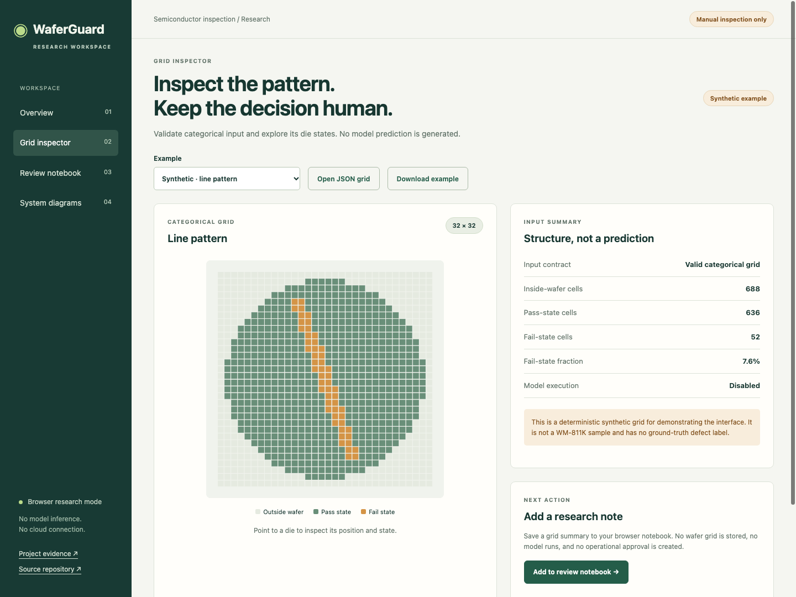
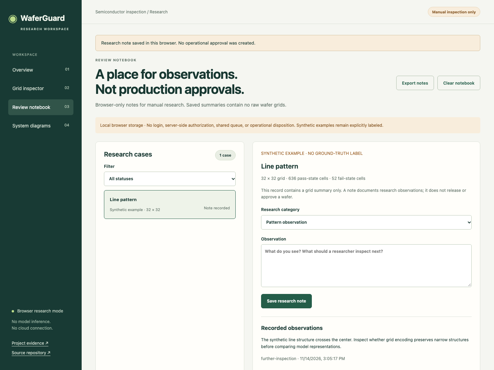
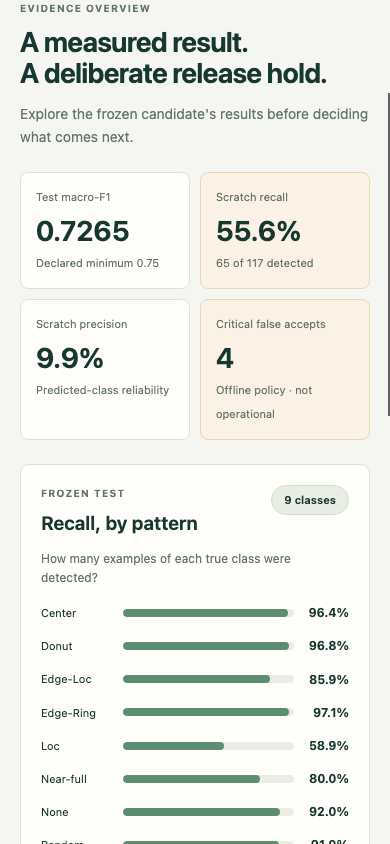
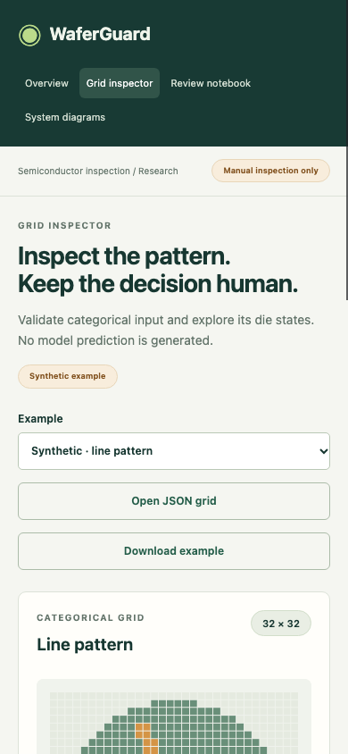

Captured from the running local app
The research workspace, in use.
Actual Chrome screenshots, captured November 14, 2026. The dashboard reads measured results. The inspector and notebook use labeled synthetic UI examples. No inference runs.
Evidence overview

Grid inspector

Research notebook

Mobile views



